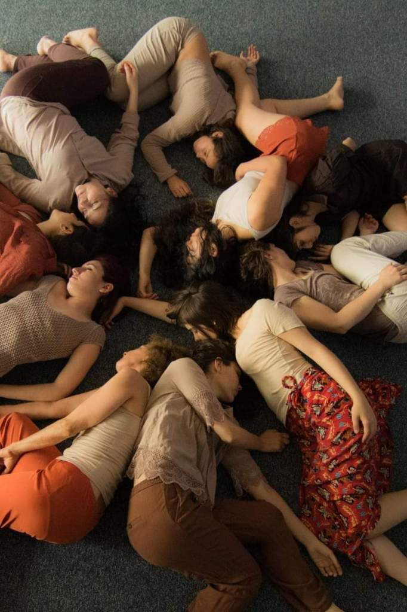

San Juan 2019
Artículo escrito para la Secretaría de Extensión Universitaria de la Universidad Nacional de San Juan, en el marco del Día Nacional de la Danza, 2019.
Desde hace varios años me pregunto acerca de las tensiones manifiestas entre los cuerpos del deber ser en la danza y los cuerpos que practicamos danza en los bordes. Entre el deber ser y el hacer danza, el cuerpo. ¿Uno o varios?
Es que pensar la danza nos traslada de manera casi indiscutida al ballet. Decimos danza y decimos El Lago de los cisnes, La Bella durmiente o Giselle. Inmediatamente aparecen esos enormes vestuarios hechos de tul vistiendo cuerpos lánguidos y longilíneos. Pensamos en mujeres, pero se nos viene a la cabeza una sola forma de cuerpo de mujer.
¿La misma?
Mujeres en Roda, 2018. Cortesía Gabriela Lucero.
No falta oportunidad en que alguna alumna se acerque a mis clases y pida disculpas por no “saber” por no “tener” un cuerpo para la danza. Porque el imaginario que nos atraviesa como sociedad ha permeado un discurso unívoco en relación con la práctica danzaria: la danza se contempla y quienes la ejecutan son cuerpos de otro mundo. Detrás de ese discurso, la disciplina, el trabajo, el esfuerzo. Los/as bailarines profesionales tienen un tiempo finito de vida útil en su carrera, y más aún las mujeres. A los 45 años una bailarina debe bajarse de las puntas y dedicarse a otros formas de la danza.Probablemente a una modalidad en las que pueda pasear su experiencia sin que sus atributos físicos entren en contradicción con la productividad capitalista.
Las representaciones en la danza, entonces, giran en torno a dos cuestiones fundamentales que se interpelan y re-discuten entre sí, a mi entender: por un lado, una noción de cuerpo exclusiva (y por lo tanto excluyente) que coloca a bailarines y bailarinas en un lugar inalcanzable, objeto de contemplación. Por otro lado, la construcción social del gusto y la división de lo sensible, jerarquizando las sensibilidades de manera tal que mientras más lejos se encuentre una práctica escénica de la representación de humanidad, dicha práctica es más valiosa.
Así, existe una ecuación bastante directa entre distribución del poder, entendiendo al poder también como sensibilidades; forma de la danza y cuerpos. En la medida que “tengo” un cuerpo, este se convierte en algo fuera de mí y por lo tanto, objeto y artefacto para la producción de lo sensible. Una sensibilidad que sólo circula en ciertos campos de disfrute, legitimada como representación hegemónica en la danza escénica y el ballet, principalmente. Por último, la división del campo de lo sensible trae consigo exclusión, márgenes y respuestas contrahegemónicas
De ninguna manera deseo plantear un cuestionamiento en relación con la danza clásica o las formas más reconocidas en la danza; porque ya no pienso sólo en el ballet, sino también en las prácticas contemporáneas que aparecen como reflexión sobre las formas del hacer. Pero sí entiendo importante describir cuáles son los mecanismos y procedimientos que operan, a mi entender, en la lógica de producción de la danza. Cuando decimos que toda danza es política, lo decimos entendiendo que el cuerpo es un territorio de disputas de poder. No tiene que ver, necesariamente, con las temáticas abordadas por los/as creadores. En este sentido, pensar que cuando decimos danza aparecen cuerpos y sensibilidades en disputa es una forma de hacer conciente la propia producción y el consumo que se hace de la obra artística.
Finalmente, entiendo que pensar la danza es un ejercicio de toma de posición y como tal, es un ejercicio revolucionario en tanto se hacen visibles las sensibilidades en juego. Pensar la danza es hacer cuerpo las contradicciones y hacerse cargo de las decisiones que tomamos como formadores, facilitadores, coreógrafos/as, directores/as y por supuesto, también como intérpretes.
No existe objetividad en la danza como no existe una objetividad en el cuerpo. Porque siempre que bailamos lo hacemos en el cuerpo que somos.